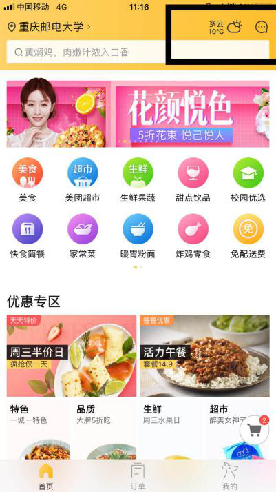

点外卖“美团外卖”，还是“饿了么”？
——基于用户需求的产品运营对比分析报告
基于“百度外卖”被“饿了么”收购，“美团”又和“大众点评”合并的现况，目前国内的外卖行业基本上就是“美团”和“饿了么”这两大巨头的较量。所以本文主要是想从产品运营的角度来综合分析“美团外卖”和美团的竞争者—“饿了么”的异同。个人觉得一个产品的运营都是围绕着能否为用户解决某些需求来展开的，那么针对外卖app的话，用户的需求基本上就是：食物要好吃、价格要实惠、配送要及时、商家种类要丰富、食品要有安全保障。以下，我们可以把用户需求作为切入点，具体从口味需求、实惠需求、及时便利需求、多选择需求、安全可靠需求、其他等多个角度出发，对比分析“美团外卖”和“饿了么”这两家外卖巨头在产品运营方面的异同。（注：所有的功能体验都是使用的ios系统来进行具体阐述的。）
在分析之前，我们可以先对比以下两款app的首页界面的异同。用户在打开一款app的时候，首先映入他们眼帘的就是该app的首页，而占据首页篇幅最大的就是根据用户的定位所展现出来的“附近商家”板块。因此，能否在第一时间吸引到用户，“附近商家”的内容呈现形式起到了至关重要的作用。从图1中，我们可以看出，“美团外卖”的“附近商家”和“饿了么”的“推荐商家”在选项层面上，唯一不同的就是“美团外卖”把“销量最高”模块显示出来，而“饿了么”把“好评优先”模块显示出来。但是二者的综合排序下拉选项里面都有对应的互补选项，所以在列表内容页面上两家平台几乎一致。
| "美团外卖"首页 | "饿了么"首页 |
| 图1 | |
1、口味需求
对于多大多数的用户来说，在面对多家自己从未尝试过的店铺时，一般都是靠商家展示出来的图片、配文、以及评分来判断该店铺是否能达到自己内心的期待值。从图二可以看出商家详情页面中展现出来的图文差距都不是太大。所以，大部分用户更关注的是相关评价。用户可以通过查看该店铺的评价、以及月销售量来判断店铺的口味是否符合自己的要求。因此，评价的重要性对于一个外卖app来说可见一斑。一个健全可靠的评价机制能够给用户带来一种“踏实、可靠”的信任感，这就好比在向他们暗示：周围的人都说好，那我是不是也该去试试呢？所以，要满足用户对口味的需求，订餐平台需要做的就是健全评价系统，让用户更有“安全感”。那么，从另外一个角度来看，订餐平台是不是也应该及时督促已经成功下单的用户及时去填写评价呢？这一点，个人认为“美团外卖”的界面显然是更胜一筹的。
| "美团外卖"商家详情页 | "饿了么"商家详情页 |
| 图2 | |
从图3中可以看出，“美团外卖”的订单页面中，有类似“淘宝”的“待评价”模块，这就会给用户一定的视觉上的提醒，促使用户去评价订单。而“饿了么”的订单评价模块则没有一个专门的“待评价”板块。此外，“饿了么”有评价换金币机制。用户可以通过提交评价换取金币，例如“评价晒图得12金币”，进一步刺激用户行为，例如到”金币商城”去兑换礼品等等。个人觉得这一点还是比较能够吸引用户去评价的。基于以上的分析，“美团外卖”也可以采取类似评价成功获得一定数量的积分等形式，进一步刺激用户对订单进行评价。
除了评价模块之外，订餐平台对商家的标签定位也会在一定程度上影响到用户的选择。例如，“美团外卖”对商家就有“品牌”、“新店”等标签，相信“品牌”标签的店铺也会对部分用户的选择产生一定的影响。
| "美团外卖"订单页 | "饿了么"订单页 |
| 图3 | |
2、口味需求
除了口感要符合用户的需求之外，“划算、便宜”应该是吸引消费者的最大的因素了。还记得最开始的“1块钱吃外卖”的那些日子嘛，不得不说，绝大多数的消费者都是冲着实惠的价格去点的外卖。具体我们可以从针对新用户的政策，日常的“满减”、“优惠券”等优惠政策这两个方面展开对比分析。
Ⅰ新用户政策：首先来看，两个平台的新用户政策的异同。针对首次注册并且第一次下单的用户，不同的店铺会有不同的“首单减**”的活动，而“饿了么”的新用户首单红包是“满15元可用“的15元红包。
Ⅱ日常优惠政策：“美团外卖”的优惠标签有以下：“满**减**”、“新客减**”、“**折起”、“首单减**”、“买赠”、“返**元券”、“有机会领券”这些；“饿了么”的优惠标签有以下：“首单”、“满减”、“新客”、“折扣”、“特价”、“会员”、“红包”这些标签。从图4这些不同的标签，显然是“美团外卖”的标签形式更能第一时间抓住人的眼球，而且可选种类要更加丰富。但是再仔细观察使用，可以发现：“饿了么”的标签在展示的时候是有展开全部和隐藏部分的按钮的，如图5是标签的缩略图和展开图的对比情况。这一点，个人觉得没有“美团外卖”的标签展示的更加直观，有时候直接粗暴的方式可能更能够在第一时间吸引到人们的眼球。具体哪一种方式更能够被用户所接纳，估计需要不断的收集用户的相关数据来分析了。但是“饿了么”的“会员”标签也很有新意，例如商铺可以设置“超级会员领**元无门槛红包”来吸引用户消费，这一点“美团外卖”也可以借鉴学习一下。
| "美团外卖"部分优惠标签 | "饿了么"部分优惠标签 |
| 图4 | |
| "饿了么"优惠标签缩略图 | "饿了么"优惠标签展开图 |
| 图5 | |
3、及时便利需求
除了美味、实惠的需求，是否能够及时送达也是至关重要的一件事。前段时间有关“外卖小哥”晚点配送是否应该被处罚的问题一直在微博热门话题中，这也间接的反映了各大外卖平台需要更多的关注一下整个配送机制是否合理这个问题了。就及时、便捷的需求来看，我们也可以从用户和商家两个角度来看“美团外卖”和“饿了么”两家平台的运营方式的不同。
Ⅰ对用户来说：所有的用户都希望自己点的外卖可以在最短的时间内送达这一点是毋庸置疑的。但是作为一个点餐平台，我们是否可以在用户点餐的时候让用户能够准备判断商家的送餐时间是否能够达到自己的预期值呢。为此，“美团外卖”和“饿了么”都设置了“距离最近”、“配送最快”或者“速度最快”这样的排序方式模块。除此之外，两家平台还都在店铺列表的右上角设置了距离和时间，下单时也都可以勾选自己预期的送餐时间。但是目前发现“饿了么”的定位不是十分准确，这肯定会很大程度上影响用户对自己订餐能否及时送达的判断准确性。另外，我们还可以看到“美团外卖”的首页的右上角有一个天气的小提示，这样用户也可以根据当天的天气来适量的预估外卖小哥的送餐时间了。如果是前段时间南京那样的大暴雪天气，相信大部分用户肯定就不会因为外卖小哥的一点延迟送餐而出现投诉的现象了。
|  | ||
| "美团外卖"的天气提示 | 列表页面的距离选项 | 配送时间选项 |
| 图6 | ||
Ⅱ对商家来说：商家如果想将自己的产品及时送到顾客手中，那么配送人员的选择肯定是至关重要的。目前来看，这两家平台的配送都可以分为“商家自配”和“官方配送”。针对“美团外卖”，可以从图7看到，美团配送的配送费率要比商家自己的配送费率要高10%-20%。就学校里的各个商家的配送情况来看，大部分店家为了降低成本都是选择自己配送的。这样的情况可能会造成订餐平台用统一的机制来管理各个店铺的具体配送时间，从而会出现一定程度的配餐不及时的情况出现。因此，订餐平台也可以从另外一个角度考虑如何用一个评价机制来判断各个店家的配送情况是否符合用户要求，例如专门针对配送是否及时的评价等。
| “美团外卖”配送机制 | “美团配送” |
| 图7 | |
4、多选择需求
对于用户来说，如果某一订餐平台可供选择的店铺较少，那么用户必然会选择另外一个选择更丰富的替代品。因此，如何吸引更多的商家入驻自己的订餐平台也是至关重要的。只针对“美团外卖”和“饿了么”这两款手机应用对商家开店那个入口的页面展示情况来看，个人觉得“美团外卖”的页面排版和内存呈现视觉上更能吸引“商家”，如下图8。但是具体能够吸引多少店家的入驻，还要取决于加盟的流程是否复杂、开店的要求是否苛刻、资费是否合理，以及官方客服和推广人员工作是否到位等等多个方面。
| “美团外卖”的“我要合作” | “饿了么”的“加盟合作” |
| 图7 | |
5、安全需求
最后一个关键要素就是食品是否卫生安全了。虽然这个因素用户自己都很容易忽略，但是一旦出现问题那就是很大的问题了，所以也是不容小觑的。针对安全卫生的要求，我们可以从“开店要求”、“是否能开发票”这两个角度对比“美团外卖”和“饿了么”这两个订餐平台。
首先是“开店要求”：“美团外卖”需要商家提供相应的营业执照、行业经营许可证、身份证照片信息等，而且入驻外卖平台的必须要是线下的实体门店；“饿了么”的要求除了上述要求之外还需要店内照片、门店logo等。这样看来，两家平台的“开店要求”基本上都是一致的，都是尽最大可能保证入驻店铺的可靠性。
那么关于商家能否“开发票”的问题，两家平台貌似也都有点差强人意了。有些商家直接就是无法提供发票，而有些商家则是必须消费满多少元才会提供发票。“饿了么”的客服表示“只有消费满100元，客服才会协助消费者向商家索要发票”。这样看来，虽然订餐平台不能强制性要求入驻商家必须有提供发票这样的保证，但是如果哪一平台能够在商家详情页面直接标注出可以提供发票的店家，那么用户或许会更愿意选择这个平台进行消费。所以，也可以从这个角度来提高自己的竞争力。
5、其他
上述几个基本的需求总体来说都是帮助用户以最低的成本做出最适合自己的选择，除此之外平台也可以给用户实时推荐出“最适合”他们的选择。针对推荐功能，“饿了么”除了在首页设有“品质优选之外”，底栏还有“发现”这一大板块，而“美团外卖”只是在首页呈现“为你优选”这一模块。
 |
|
| “美团外卖”的“ 为你优选” | “饿了么”的“ 品质优选”、“发现” |
| 图9 | |
针对这部分的内容，我们可以对比“美团外卖”的“邀请有奖”和“饿了么”的“推荐有礼”。由此还可以引申出这两家外卖平台的红包推广活动的不同，这个就涉及到很多的活动推广了，就不展开说明了。个人接触到更多的是“美团外卖”第几个领取的人红包最大的活动，因为最近几乎每天都在微信里帮别人点红包，哈哈哈哈。附图表示我是一个忠实的点红包“爱好者”。